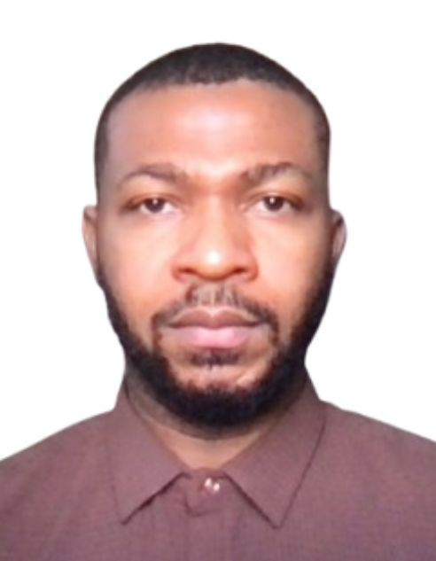

My Resume

EMMANUEL OKORO
Email: hiemmanuelokoro@gmail.com
Phone: +234 813 900 6885
Location: Abuja, Nigeria
PROFESSIONAL SUMMARY
Results-driven Marketing Manager with 7+ years of experience delivering data-driven marketing
strategies across digital and media sectors. Proven success in increasing brand visibility,
driving audience growth, and improving conversion rates through SEO, paid advertising, and
integrated campaigns. Strong background in analytics, performance marketing, and
cross-functional leadership.
EDUCATION
B.Sc (Hons) Mathematics & Computer Science – University of Ibadan (In Progress)
DATE: 2009
PROFESSIONAL EXPERIENCE
Creative Director – CCPMAX MEDIA, Abuja (Apr 2023 – Present)
- Built and optimized high-performing websites, improving usability and conversion efficiency.
- Executed multi-channel digital campaigns, achieving consistent growth in engagement and reach.
- Applied SEO, analytics, and paid advertising strategies to drive measurable increases in traffic and visibility.
- Translated business objectives into actionable marketing strategies, improving customer acquisition.
Key Achievements: Delivered consistent double-digit growth in website traffic and engagement. Improved conversion rates and strengthened brand positioning for multiple clients.
Brand Manager – Payit.ng (Feb 2017 – Dec 2018)
- Led integrated marketing campaigns across digital and offline channels.
- Conducted market research to identify growth opportunities and refine brand positioning.
- Managed budgets and optimized marketing spend for improved ROI.
Key Achievements: Increased brand awareness and campaign performance through targeted marketing initiatives.
Web Developer / Digital Marketing – Citycast Promo Ltd (Dec 2018 – Present)
- Developed SEO-optimized websites, improving search rankings and organic traffic.
- Implemented analytics tools to track performance and inform strategy.
Key Achievements: Enhanced online visibility and lead generation through technical and marketing improvements.
CERTIFICATIONS
- Advanced Multimedia Design & Motion Graphics
- Graphics Design
- WordPress Professional
- Front-End Web Development
TECHNICAL SKILLS
- CMS: WordPress
- Node.js
- HTML
- CSS
- JavaScript
- Google Analytics
- SEO Tools
- Adobe Creative Suite
Hobbies Contact
My Resunme Copyright © 2026 Emmanuel's, Resume.